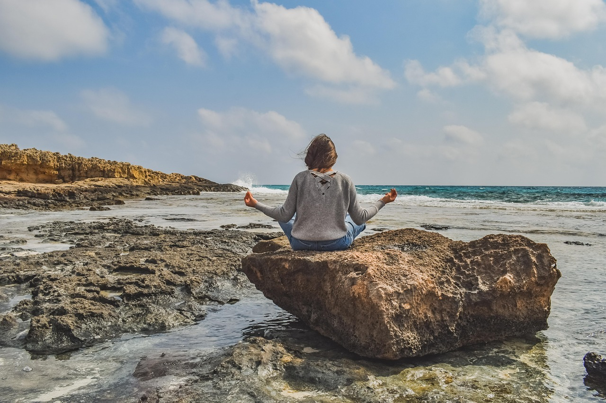

Photo: dimitrisvetsikas1969 / PixabayOnline courses have given learners across the globe a unique opportunity to learn outside of formal educational settings and in less supervised environments. The independent nature of this form of learning heightens the need for learners to have the tools to both initiate and manage their own learning. Moreover, as individuals engage with content, instructors, and fellow students exclusively online, an explicit focus on techniques meant to deepen the learning experience becomes increasingly important. All learners in both in-person and online courses are in need of effective skills and strategies to become aware of and self-regulate their thoughts, emotions, and behaviors. Within physical classrooms, and even within smaller fully online courses, instructors can somewhat easily incorporate activities such as journaling and peer discussion intended to promote states of mind that foster deep reflection and perspective taking. As some courses grow to a massive scale, the task of promoting these qualities becomes much more difficult. One way of fostering these skills is by incorporating contemplation in your course.
Contemplation is the central focus of contemplative science — a growing multidisciplinary field aimed at understanding the mind-body systems through contemplative practices (Roeser & Zelazo, 2012). Mindfulness, a term quite popular among educators at the moment, is one construct that falls under the umbrella of contemplative science. Contemporary researchers define mindfulness as paying attention to the present moment, including thoughts and emotions, with acceptance, curiosity, and kindness (Brown & Ryan, 2003; Kabat-Zinn, 1994). Mindfulness is an ancient idea with roots in different philosophies and religious traditions. Over the last century, mindfulness has been adopted globally and is now a widely used contemplative exercise.
Cultivating Mindful Awareness and Reflection
Mindfulness meditation trains skills by applying restraint on ordinarily uncontrolled mental or physical activities (Mind and Life Education Research Network [MLERN], 2012), encouraging the use of voluntary control in order to focus attention on certain objects (e.g., the breath) or thoughts (e.g., kindness to others). Schools throughout the United States are incorporating mindfulness meditation into educational curricula with the goal of enhancing self-awareness and self-regulation of attention, emotions, and behavior (Greenberg & Harris, 2012; MLERN, 2012). While mindfulness is readily criticized, the science supporting it is quite persuasive. Individuals who engage in mindfulness practice demonstrate reduced anxiety and depression (Hofmann, Sawyer, Witt, & Oh, 2010; Holzel et al., 2013), lower stress (Baer, 2003; Creswell et al., 2016), improved attention skills (Becerra, Dandrade, & Harms, 2016; Jha, Krompinger, & Baime, 2007; Sedlmeier et al., 2012), increased self-regulation (Tang et al., 2007), and richer and more positive personal relationships (Carson, Carson, Gil, & Baucom, 2004; Coatsworth, Duncan, Greenberg, & Nix, 2010). Recently, researchers have shown that students who engage in mindfulness activities perform better academically, even in mathematics (Schonert-Reichl et al., 2015).
Mindfulness and contemplative science more broadly has been applied to the learning sciences in what is termed contemplative education. Roeser and Peck (2009) defined contemplative education as “a set of pedagogical practices designed to cultivate the potentials of mindful awareness and volition in an ethical-relational context in which the values of personal growth, learning, moral living, and caring for others are also nurtured” (p. 127). Contemplative education provides a specific set of practices designed to nurture mindfulness and intentional forms of being and learning. What’s necessary for contemplative education is a competent teacher (either a person or a set of teachings) and pedagogical practices embedded in experiential learning aimed at cultivating relaxed and concentrated states of awareness within learners. These practices are placed in a larger context of ethics and values such as open-mindedness, curiosity, and respect for others. Learning practices that fall under contemplative education include activities such as meditation, reflecting upon existential questions, being in nature, physical activities such as yoga or tai chi, and doing art (Roeser & Peck, 2009).
Examples of Contemplative Practices
One exemplary MOOC that focuses on contemplative education through mindfulness at scale is the edX course “Transforming Business, Society, and Self with U.Lab.” The lead instructor is Otto Scharmer out of MIT. Adam Yukelson is the co-instructor and lead designer for the course who has shared information and experiences of their students with me. The course began in January 2015 and ran for eight weeks, during which they had approximately 42,000 registered participants. During the first run of their course, which may or may not be due to their focus on mindfulness, they had the fourth-highest completion rate on edX. The majority of learners in their course have no previous experience with mindfulness.
The purpose of the course, as Mr. Yukelson stated, is “designed to help leaders at all levels in business, government, and civil society identify and shift the deeper patterns of thought that, when left unexamined, keep us re-enacting results in social systems that almost nobody wants.” This is where mindfulness and contemplative practices become crucial. Dr. Scharmer and Mr. Yukelson view mindfulness as one helpful method for suspending and letting go of patterns of thought. This suspension of typical habits of thinking opens up new possibilities of being.
The instructors begin by introducing the principles behind mindfulness primarily by focusing on the different ways one can pay attention. This serves as the basis for what many participants referred to as the most crucial element of the course—coaching circles. Coaching circles are peer-led, and use a seven-step process “case clinic” process. They teach the process through two instructional videos, then give participants a mechanism outside of edX to self-select into groups of 5-6. The coaching circles meet one hour per week, with each meeting focusing on one of the members. In some instances, a coaching circle consists of friends and colleagues and they meet in person, but many of the circles only meet virtually. The individuals in these groups typically do not know each other prior to entering the course and will set up their weekly meetings using Google Hangouts or Skype. Mr. Yukelson shared feedback from two learners from the MOOC.
“The connection with other circle members was personally transformative. Although I missed the first coaching circle call, I felt as though I had known the others my entire life…. My skepticism around the ability to connect in such a way melted. I realized it was not the medium [through which] I communicated, but how I showed up internally that made all the difference! This paradigm shift will stick with me for the rest of my life. After endless in-person and online ‘downloading’ sessions that went nowhere, this was as though a portal I never knew existed was opened completely. All I had to do was walk through it with the love and support of the others. I was so struck with ‘I am them’ and ‘they are me’.”
“I’ve never spoken to someone I don’t know on video as a first means of contact before, and after I overcame my initial shyness I found the experience empowering… Within an hour and a half our circle reached such a deep level of connectedness and trust, it was as if we knew each other since ages.”
In addition to coaching circles, the course also includes live sessions, conducted in livestream with a twitter feed on the side. The live sessions include a variety of contemplative practices including guided journaling and meditation. The full live sessions are 1.5 hours. The maximum number of unique viewers the instructors have had for a session is approximately 20,000. Many learners view the live sessions together in self-organized “hubs.”
In addition to the techniques utilized in the particular MOOC described above, there are various contemplative practices that can be incorporated into your course, whether it is a MOOC or a regular online course. The practices outlined below have been used in online classes which may be useful for any instructor. The activities outlined below draw from Mindfulness-Based Stress Reduction developed by Jon Kabat-Zinn, Mindful Tech by David M. Levy, and Contemplative Practices in Higher Education by Daniel Barbezat and Mirabai Bush.
Mindful Breathing (3 – 6 minutes)
This activity serves as the building blocks for establishing present moment awareness. The practice is simple, but not easy. The focus of attention turns to the feeling of the breath moving in and out of the body. The mind will wander, but the practice comes in bringing attention back to the breath again and again. By doing this simple practice daily, students are strengthening their ability to pay attention. There are many smartphone applications and resources online that offer guided breathing practices. One that is available both on your phone and online is Stop, Breathe, and Think, which has been used in research studies involving the effects of mindfulness meditation on learning.
An example of the instructions:
“Adopt a posture that is both relaxed and alert. (Example: Sit upright in a chair, feet on the ground, hands folded in your lap, eyes either closed or slightly open). Begin attending to the sensations of your breathing. Identify a place in your body (stomach, chest, tip of your nose) where you can feel the physical sensations that arise as you breathe in and out. Notice when your mind wanders away from the sensations of the breath. Bring your attention back to the breath whenever your mind wanders.”
Deep Listening (10 minutes)
This activity is designed to bring in deep listening to daily life. In this activity, everyone finds a partner in the course. Then, one person speaks and the other listens in complete silence. The listener listens as carefully as possible, letting go of interpretations, judgments, and reactions, as well as irrelevant thoughts, memories, and plans. When the speaker finishes, the listener repeats as closely as possible what the speaker said. The original speaker sits in silence while the listener repeats this back to them.
Instructions: Find a partner. You are encouraged to connect with someone in your course, but you can do this with a family member or friend if you cannot find a class partner. In this exercise, you will take turns listening and speaking.
- One partner will spend 3 minutes speaking about a course topic or an aspect of his or her life. Set a timer that will make a noise when the 3 minutes is up, avoiding looking at the time.
- This 3 minutes is devoted to the speaker. The listener sits in silence. If the speaker runs out of things to say, sit in silence. Whenever you have something to say, you may continue speaking again.
- The listener should listen in silence. When you listen, give your full attention to the speaker. Be curious, but don’t ask questions while listening. You may acknowledge with facial expressions or by nodding your head. Try not to over acknowledge. You may feel an urge to coach, identify, chime in, or interrupt. This is normal. Just notice when this occurs and resist the temptation to act. Listen with kindness. When thoughts or emotions come into your mind, simply notice them and gently return your full attention to the speaker. If the speaker runs out of things to say, give him or her the space for silence, and then be available to listen when he or she speaks again.
- After the alarm sounds, set the alarm for 1 minute.
- Repeat what you have heard from the speaker. Simply paraphrase, don’t memorize.
- After the alarm sounds, the speaker should take 1 more minute to clarify anything she feels was misunderstood by the listener. Again, one person speaks at a time in a kind and respectful manner.
- Switch turns. Repeat steps one through five. Now the speaker is the listener and the listener the speaker.
- Reflect on how it feels to be listened to so closely and what it felt like to listen deeply to another person. This can be a conversation lasting however long you prefer.
- End by thanking the other person for listening.
Mindful Check-in (3 – 6 minutes)
This activity is designed to remind students to actually experience what is happening in the moment, rather than simply achieving goals and marking off to-do lists. Often there is too much emphasis on going through the motions rather than noticing what is going on with your mind and body. The exercise asks students to explore the breath and body, emotional states, and the quality of attention.
Instructions: Take a few minutes to answer the following questions.
What is the quality of your attention?
Are you focused or distracted? Take time to think about how you are attending to what is happening in the current moment.
What is the quality of your breathing?
Take a moment to notice the current rhythm and pattern of your breathing, but don’t attempt to change it. Is your breathing fast, slow? Are you holding your breath?
What is going on in and with your body?
Notice your heart rate and posture. How are you sitting, standing, or lying down? Are you comfortable? Notice any places of tension and any place you feel you can relax. It may be your cheeks, your shoulders, your eyebrows, or your chest.
What is your current emotional state?
Try to find a word to describe your current emotional state. Try to sense how you are feeling in this moment. Don’t place judgment on this feeling, just notice.
After you have gained familiarity with the asking yourself these questions, you can take time during your day to ask, “How am I feeling right now?”.
The Multitasking Exercise (20 – 30 minutes)
Use this exercise to pay attention to what you’re doing online. Notice your multitasking strategy. For example, when do you decide to switch from one task to another? Some of us respond to every interruption immediately, while others carefully limit the number of interruptions and respond selectively. By observing how you multitask, you will have the chance to see your strategy and make changes if you would like.
- Download recording software.
- You can use any software available. At minimum chose a tool where you can see what is happening on your desktop, laptop, or mobile screen. Some options: RescueTime, Screencast-O-Matic, CamStudio, and Screencastify. If you choose not to download the software, you can attempt to notice your multitasking. Rather than writing down observations, you can turn on an audio recorder and speak your observations. A third option is to ask a friend or family member to observe you while you multitask. You can also to do this with a classmate, sharing screens, and observing each other’s activity while multitasking. Make sure not to violate anyone’s privacy from sensitive information on your screen if you are having someone observe you!
- Multitask as you usually do
- Do this at a time of day and location when you’re certain to be dealing with multiple windows and applications, and possibly interrupted by other technology or face-to-face interactions. Record multiple sessions or just one.
- Watch the video
- Observe what you are doing and feeling or have someone tell you what they observed.
- Log what you observe
- Watch the recording immediately after the session to note any feelings from the recent experience. Take note of how you felt (breath, body, attention) during the different points. Pay attention to where you made choices to move to another activity or remain on one task.
- Example: “Facebook, paying bills, twitter. Knowing I’m being recorded. Noticing how many times I touch my glasses, moving my feet around. Facebook is open and lots of folks responding to something I posted earlier but choosing to stick with what I am doing so that I can complete it. Impatient while a photo uploads so switch to emails. New class registrant so switch to Excel. Take care of that task—feels good.”
- Summarize
- Reflect on what you’ve logged. Write about the patterns you’re discovering. Which dimensions of your present experience were most salient? Were you able to notice the times when you did switch to another task? How would you characterize your multitasking?
- Form personal guidelines
- You may notice changes that you want to make. For example, you may notice your shoulders are tense, breathing is shallow, brow is furrowed, and you want to pay attention to these signs of stress to relax your body. You may also want to change your multitasking behavior.
- Share and discuss
- Share your multitasking experience with a classmate using the deep listening practice described earlier.
Journal Writing (5 minutes)
Writing in a journal is one of the oldest methods of self-exploration and introspection. A journal can help you live in the present moment, to cultivate awareness, and to bring in gratitude. Students are instructed to write about their experiences in the first person, without thought of another reader besides themselves. Students can write with pen and paper or on computer or tablet. Journaling differs from a keeping a diary, as a diary records daily events. Journal entries foster reflection of mental and emotional activities of the individual.
Instructions: Keep a daily journal (either handwritten or electronic). Each entry should be about a paragraph. Record your feelings, thoughts, sensations, and any related experiences. This is not an exercise to record what you’ve done. Think of it as a conversation partner to reflect on reactions to daily life. Some questions to consider asking yourself in your reflection: What troubled you today? What made you happy today? What is one thing you are grateful for today? What are you enjoying about your work? What are you enjoying about your family?
Deep Reflection (10 – 20 minutes)
This activity aims to give students silence while they deeply reflect on their goals and how they are spending their time. Students are encouraged to freely write answers to the following questions.
- What matters here? Make a list of how you want to spend your time in this program. This might be going to class, studying, spending time with close friends, perhaps volunteering in your community or reading books not on any course’s required reading list. What matters to you?
- This question is about taking ownership for oneself in the world.
- How do you spend your time?
- Make a list of how you actually spent your time, on average, each day over the past week.
- Match the list from question one to this list.
- How well do your commitments actually match your goals?
- You may find strong overlap between the lists. Many people do not. How can you align your time commitments to reflect your personal convictions?
Conclusion
The ability to sustain attention and self-regulate with qualities of openness, curiosity, and respect are important for academic success and critical for getting and maintaining employment. The techniques designed to improve these abilities are only beginning to gain momentum in the classroom and, in addition, the scientific evidence supporting these practices continues to grow through educational research. What may work effectively in the physical classroom will require thoughtful adaptation and creativity by instructors in order to be deployed at scale. Some instructors like Dr. Scharmer and Mr. Yukelson are leading the way. It is clear that to explicitly focus on these qualities of being requires courage and humility from instructors. Contemplative practices, to the extent they have positive effects on learners, may also cause reciprocal effects between learners and instructors. To whatever extent learners grow in their awareness, reflection, curiosity, and respect for others, instructors stand to benefit greatly from this approach.
References
Baer, R. A. (2003). Mindfulness training as a clinical intervention: A conceptual and empirical review. Clinical Psychology: Science and Practice, 10(2), 125–143. https://doi.org/10.1093/clipsy/bpg015
Becerra, R., Dandrade, C., & Harms, C. (2016). Can specific attentional skills be modified with mindfulness training for novice practitioners? Current Psychology. https://doi.org/10.1007/s12144-016-9454-y
Brown, K. W., & Ryan, R. M. (2003). The benefits of being present: Mindfulness and its role in psychological well-being. Journal of Personality and Social Psychology, 84(4), 822–848. https://doi.org/10.1037/0022-3514.84.4.822
Carson, J. W., Carson, K. M., Gil, K. M., & Baucom, D. H. (2004). Mindfulness-based relationship enhancement. Behavior Therapy, 35(3), 471-494.
Coatsworth, J. D., Duncan, L. G., Greenberg, M. T., & Nix, R. L. (2010). Changing parent’s mindfulness, child management skills and relationship quality with their youth: Results from a randomized pilot intervention trial. Journal of Child and Family Studies, 19(2), 203–217. https://doi.org/10.1007/s10826-009-9304-8
Creswell, J. D., Taren, A. A., Lindsay, E. K., Greco, C. M., Gianaros, P. J., Fairgrieve, A., … & Ferris, J. L. (2016). Alterations in resting-state functional connectivity link mindfulness meditation with reduced interleukin-6: a randomized controlled trial. Biological Psychiatry, 80(1), 53-61.
Greenberg, M. T., & Harris, A. R. (2012). Nurturing mindfulness in children and youth: Current state of research: Nurturing mindfulness in children and youth. Child Development Perspectives, 6(2), 161–166. https://doi.org/10.1111/j.1750-8606.2011.00215.x
Hofmann, S. G., Sawyer, A. T., Witt, A. A., & Oh, D. (2010). The effect of mindfulness-based therapy on anxiety and depression: A meta-analytic review. Journal of Consulting and Clinical Psychology, 78(2), 169–183. https://doi.org/10.1037/a0018555
Hölzel, B. K., Hoge, E. A., Greve, D. N., Gard, T., Creswell, J. D., Brown, K. W., … Lazar, S. W. (2013). Neural mechanisms of symptom improvements in generalized anxiety disorder following mindfulness training. NeuroImage: Clinical, 2, 448–458. https://doi.org/10.1016/j.nicl.2013.03.011
Jha, A. P., Krompinger, J., & Baime, M. J. (2007). Mindfulness training modifies subsystems of attention. Cognitive, Affective, & Behavioral Neuroscience, 7(2), 109–119.
Kabat-Zinn, J. (1994). Wherever you go, there you are: Mindfulness meditation in everyday life. New York: Hyperion.
Mind and Life Education Research Network (MLERN): J. Davidson, R., Dunne, J., Eccles, J. S., Engle, A., Greenberg, M., Jennings, P., Jha, A., Jinpa, T., Lantieri, L., Meyer, D., Roeser, R.W., & Vago, D. (2012). Contemplative practices and mental training: Prospects for American education. Child Development Perspectives, 6(2), 146–153. https://doi.org/10.1111/j.1750-8606.2012.00240.x
Roeser, R. W., & Peck, S. C. (2009). An education in awareness: Self, motivation, and self-regulated learning in contemplative perspective. Educational Psychologist, 44(2), 119–136. https://doi.org/10.1080/00461520902832376
Roeser, R., & Zelazo, P. D. (2012). Contemplative Science, Education and Child Development: Introduction to the Special Section. Child Development Perspectives, 6(2), 143–145. https://doi.org/10.1111/j.1750-8606.2012.00242.x
Schonert-Reichl, K. A., Oberle, E., Lawlor, M. S., Abbott, D., Thomson, K., Oberlander, T. F., & Diamond, A. (2015). Enhancing cognitive and social–emotional development through a simple-to-administer mindfulness-based school program for elementary school children: A randomized controlled trial. Developmental Psychology, 51(1), 52–66. https://doi.org/10.1037/a0038454
Sedlmeier, P., Eberth, J., Schwarz, M., Zimmermann, D., Haarig, F., Jaeger, S., & Kunze, S. (2012). The psychological effects of meditation: A meta-analysis. Psychological Bulletin, 138(6), 1139–1171. https://doi.org/10.1037/a0028168
Tang, Y.Y., Ma, Y., Wang, J., Fan, Y., Feng, S., Lu, Q., Sui, D., Rothbart, M.K., Fan M, & Posner, M.I. (2007). Short-term meditation training improves attention and self-regulation. Proceedings of the National Academy of Sciences, 104(43), 17152–17156.